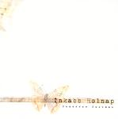

| Artist: | Inkabb Holnap |
| Title: | Tomorrow Instead |
| Label: | Stereo Periferic BGCD 120 |
| Length(s): | 56 minutes |
| Year(s) of release: | 2003 |
| Month of review: | [06/2005] |
| 1) | Arouser | 1.24 |
| 2) | Without Harmony | 6.14 |
| 3) | 1000 Lei | 7.52 |
| 4) | She's Just Standing There | 1.21 |
| 5) | Hi Honey | 9.33 |
| 6) | Old Man's Mine | 5.26 |
| 7) | Oheighthundred | 6.01 |
| 8) | See Saw | 5.07 |
| 9) | Strawberry Mellon | 12.43 |
We simply move right into 1000 Lei. The keyboards have a dominant role but they do not sound particularly fat, and my feeling is that that would have been better. As if I am listening to Mark Kelly, but without the abundance. The bass also gets a solo spot halfway playing a somewhat folky melody.
She's Just Standing There is a very short and somewhat mysterious tune with a few vocals (in Hungarian I would guess). A bit of This Mortal Coil and such in here.
Hi Honey is more in a meandering bluesrock vein with jazzrockish excursions on guitar. Not particularly interesting, but certainly not bad either. The melodies and the 'safety valve' the band seems to hold on to also remind me quite a bit of early Alan Parsons Project. The second part of the track is more up-beat, and even a bit groovy. Cranking up the volume does help by the way with this record, they immediately seem to gain power. But they do still play it safe.
Old Man's Mine opens with a brassy piano, but soon we move into a relaxed gait again (the intro did also give me a scare that we'd move into disco territory). The grooviness stays. The keyboards sound nice here and the guitar includes a bit more bite than usual. The main line of the music is melodicism, and my guess is that the second half of this track is the best part of that so far. Comparisons to many of the Southamerican symphonic bands can be made, even with those jazz excursions.
Oheighthundred is again a melting pot of styles: a bluesy guitar sound at times, more complex rhythmic than what we have seen so far. It is difficult to give precise comparisons, but my guess is that this band has the melodicity of Camel or Caravan, and the instrumentality of jazzrock. This impression is strengthened by the next few tracks, although the conclusion of the album Strawberry Mellon has that meandering rocky feel of jazzrock.